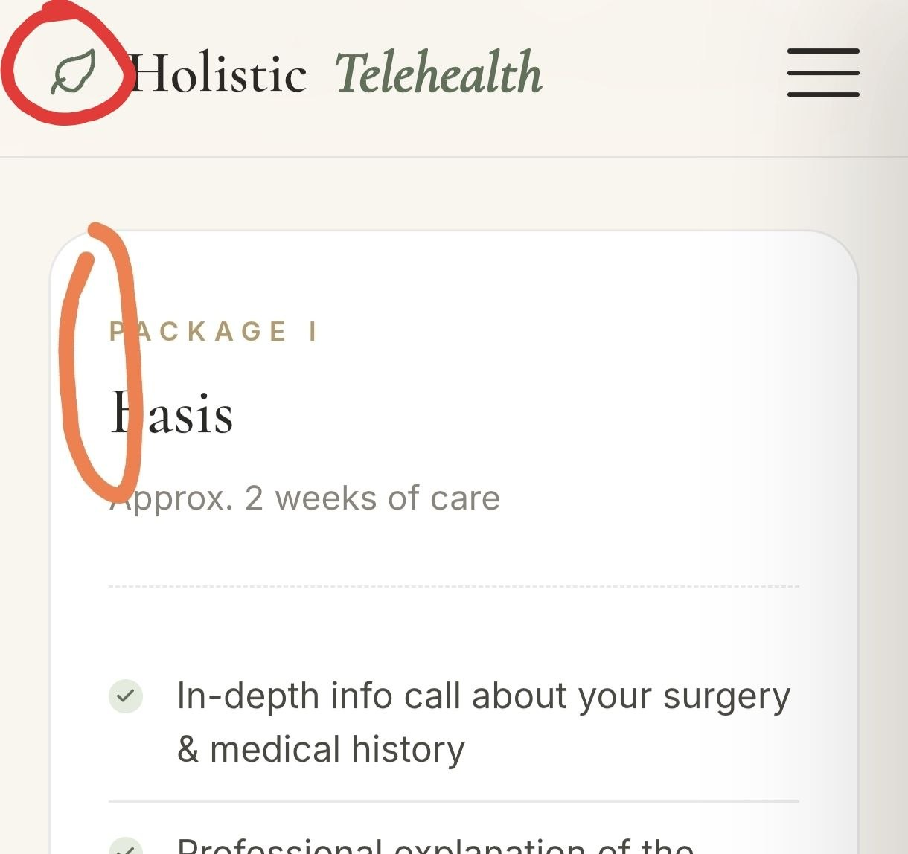

Du bist es dir wert.
Ganzheitliche Begleitung vor, während und nach deiner Operation — online, fortschrittlich und sicher im eigenen Zuhause. Schulmedizin und ganzheitliche Medizin ergänzen sich für dein bestes Ergebnis.

47 Jahre, verheiratet, Mutter von drei Kindern — und seit über 15 Jahren zwischen zwei Welten zuhause.
Examinierte Krankenschwester und diplomierte Operationspflegefachfrau mit langjähriger praktischer Erfahrung in unterschiedlichsten operativen Gebieten und auf der Intensivstation.
Mit 32 Jahren habe ich klassische Homöopathie studiert und berate seitdem Menschen in diesem Bereich. Als Yoga- und Meditationslehrerin unterstütze ich Klienten in ihrem Prozess der Gesundheitsprophylaxe und Erhaltung — online, fortschrittlich und sicher im eigenen Zuhause.
Basierend auf meinen fachlichen Kenntnissen aus Schulmedizin und Alternativmedizin berate und begleite ich dich vor, während und nach einer Operation. Ich nehme mir die Zeit zur individuellen Unterstützung, um deine mentale, emotionale und physische Genesung zu ermöglichen — und somit beste Operationsergebnisse zu erzielen.
Meine HOLISTIC CARE PAKETE richten sich an Klienten, die eine Basisbegleitung wünschen, bis hin zu intensiver Unterstützung. In meiner Tätigkeit bin ich beratend und ganzheitlich unterstützend tätig — individuell auf jeden Menschen zugeschnitten.
„Ich nehme mir die Zeit, die im Krankenhaus oft nicht vorhanden ist."
Wissenschaftliche Erkenntnis trifft achtsame Praxis. Diese Effekte sind in der Forschung wie in der Praxis dokumentiert — und Teil meiner Arbeit mit dir.
Mental, emotional und physisch — mit positiver Auswirkung auf Operations- und Narkoseverlauf.
Optimierter Blutdruck, ruhigere Herzfrequenz und bessere Durchblutung der Organe.
Mehr Sauerstoffversorgung des Gewebes — und dadurch eine verbesserte Heilung nach der OP.
Reduzierte Ausschüttung von Stresshormonen wie Adrenalin und Cortisol.
Mentaler, emotionaler und physischer Heilungsprozess — Hand in Hand.
Vorbeugung von Lungenentzündung, Thrombose und Bewegungs- oder Verdauungseinschränkungen.
Fachliche Aufklärung über OP- und Anästhesieverfahren — Wissen schafft Ruhe.
Aufklärung optimiert dein Selbstvertrauen und deine Selbstverantwortung.
Individuelle Support-Calls vor und nach der Operation — du bist nicht allein.
Allen Neukund:innen steht ein 15-minütiges kostenloses Kennenlerngespräch über Zoom offen. Wir schauen, ob die Chemie stimmt und welches Paket zu dir passt — ganz unverbindlich.
Jedes Paket kann auf Wunsch individuell für dich angepasst werden. Wähle das Niveau an Unterstützung, das sich für dich richtig anfühlt.
Echte Ergebnisse von Frauen, die ich begleiten durfte.
Um den „Kreis zu schließen", kannst du anschließende Coaching-Gespräche mit mir vereinbaren — wir üben gemeinsam Praktiken, die deine Gesundheit langfristig verbessern und erhalten.
Jede Session ist absolut individuell auf dich zugeschnitten und dauert 60 Minuten.
„Sprich mich gerne an — wir finden den Rhythmus, der zu dir passt."
Du bist es dir wert.
Schreib mir gerne eine Nachricht oder ruf mich an — wir vereinbaren ein kostenloses 15-minütiges Kennenlerngespräch via Zoom. Unverbindlich, ganz in deinem Tempo.
Lass uns in einem entspannten Zoom-Call schauen, ob wir zusammenpassen und welche Begleitung sich für dich richtig anfühlt.
Termin per Mail anfragen